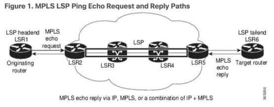

The MPLS LSP Ping feature is used to check the connectivity between Ingress LSR and egress LSRs along an LSP. MPLS LSP ping uses MPLS echo request and reply messages, similar to Internet Control Message Protocol (ICMP) echo request and reply messages, to validate an LSP. While ICMP echo request and reply messages validate IP networks, MPLS echo and reply messages validate MPLS networks. The MPLS echo request packet is sent to a target router through the use of the appropriate label stack associated with the LSP to be validated. Use of the label stack causes the packet to be forwarded over the LSP itself. The destination IP address of the MPLS echo request packet is different from the address used to select the label stack. The destination IP address is defined as a 127.x.y.z/8 address and it prevents the IP packet from being IP switched to its destination, if the LSP is broken.
An MPLS echo reply is sent in response to an MPLS echo request. The reply is sent as an IP packet and it is forwarded using IP, MPLS, or a combination of both types of switching. The source address of the MPLS echo reply packet is an address obtained from the router generating the echo reply. The destination address is the source address of the router that originated the MPLS echo request packet. The MPLS echo reply destination port is set to the echo request source port.
The following figure shows MPLS LSP ping echo request and echo reply paths.
Figure 1. MPLS LSP Ping Echo Request and Reply Paths

By default, the ping mpls ipv4 command tries to determine the Forwarding Equivalence Class (FEC) being used automatically. However, this is only applicable at head-end and works only if the FEC at the destination is same as the source. If the source and destination FEC types are not the same, the ping mpls ipv4 command may fail to identify the targeted FEC type. You can overcome this limitation by specifying the FEC type in MPLS LSP ping using the fec-type command option. If the user is not sure about the FEC type at the transit or the destination, or it may change through network, use of the generic FEC type command option is recommended. Generic FEC is not coupled to a particular control plane and allows path verification when the advertising protocol is unknown, or may change during the path of the echo request. If you are aware of the destination FEC type, specify the target FEC as BGP or LDP.